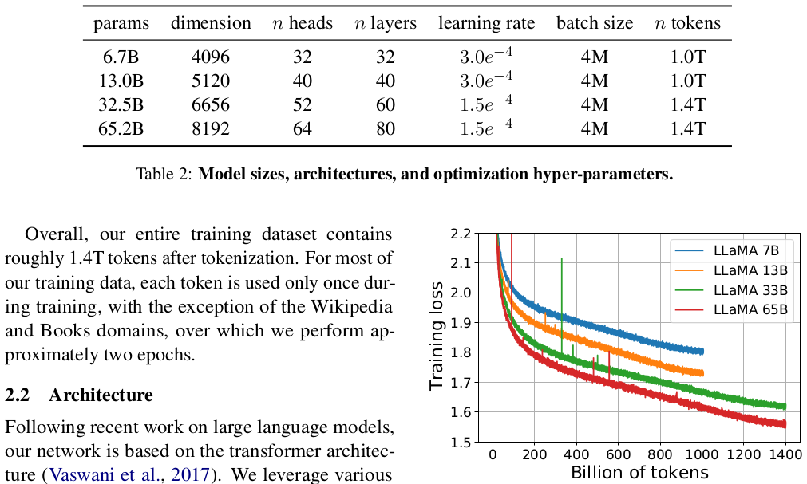
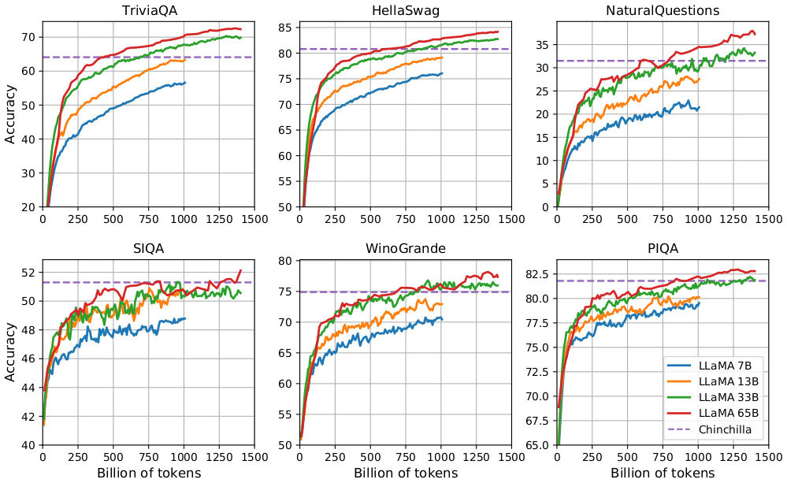
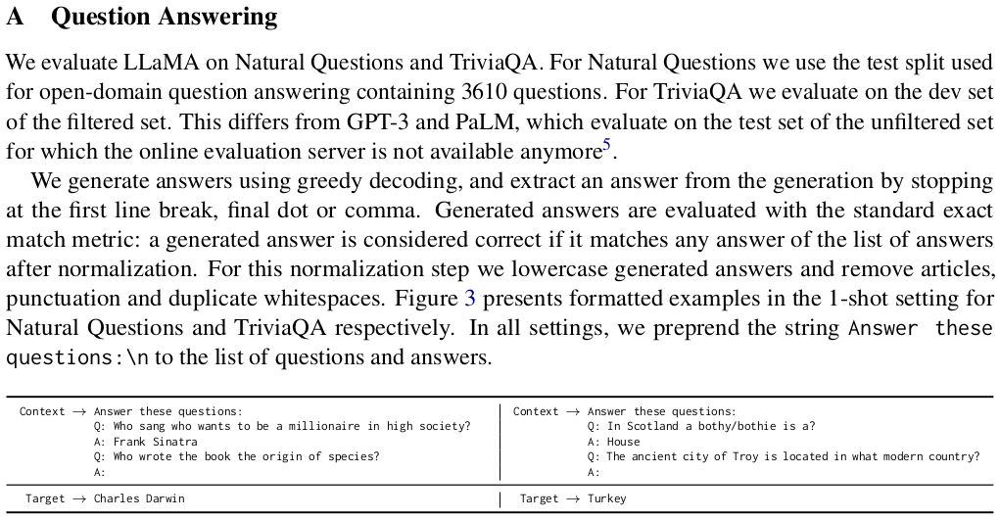

我们推出了 LLaMA，这是一系列参数量从 70 亿（7B）到 650 亿（65B）的基础语言模型。我们在数万亿个 Token 上训练了我们的模型，并表明完全可以使用公开可用的数据集来训练 SOTA（最新技术水平）模型，而无需借助未公开的专有数据集。特别地，LLaMA-13B 在大多数基准测试中超越了 GPT-3 (175B)，而 LLaMA-65B 具有与最佳模型 Chinchilla-70B 和 PaLM-540B 竞争的实力。我们将所有模型释放给研究社区。
在大规模文本语料库上训练的大型语言模型（LLM）已经展示出通过文本指令或少量示例执行新任务的能力 (Brown et al., 2020)。这些少样本（few-shot）特性最初在模型扩展到足够大时出现 (Kaplan et al., 2020)，从而引发了一系列致力于进一步扩展这些模型的工作 (Chowdhery et al., 2022; Rae et al., 2021)。这些工作基于这样一个假设：参数量越大，性能越好。然而，Hoffmann 等人 (2022) 的最新研究表明，在给定的计算预算下，最佳性能并不是由最大的模型达到的，而是由在更多数据上训练的较小模型达到的。
Hoffmann 等人 (2022) 提出的缩放定律（Scaling Laws）的目的是确定如何针对特定的训练计算预算最佳地扩展数据集和模型大小。然而，该目标忽略了推理预算（Inference Budget），而这在规模化提供语言模型服务时变得至关重要。在这种情况下，给定目标性能水平，首选的模型不是训练最快的模型，而是推理最快的模型；虽然训练一个大型模型以达到某种性能水平可能成本更低，但训练时间更长的较小模型最终在推理阶段会更便宜。例如，尽管 Hoffmann 等人 (2022) 建议在 200B Token 上训练 10B 模型，但我们发现即使在 1T Token 之后，7B 模型的性能依然在持续提升。
本工作的重点是通过在比通常使用的数据量更多的数据上进行训练，训练一系列在各种推理预算下达到最佳性能的语言模型。由此产生的模型称为 LLaMA，参数量从 7B 到 65B 不等，与现有的最佳 LLM 相比具有极具竞争力的性能。例如，LLaMA-13B 在大多数基准测试中优于 GPT-3，尽管其体积小了 10 倍。我们相信该模型将有助于推动 LLM 的普及和研究，因为它可以运行在单块 GPU 上。在规模的高端，我们的 65B 参数模型也与 Chinchilla 或 PaLM-540B 等最佳的大型语言模型具有竞争力。
与 Chinchilla、PaLM 或 GPT-3 不同，我们仅使用公开可用的数据，使我们的工作与开源兼容，而大多数现有模型依赖于不可用或未记录的数据（例如“Books-2TB”或“社交媒体对话”）。虽然存在一些例外，例如 OPT (Zhang et al., 2022)、GPT-NeoX (Black et al., 2022)、BLOOM (Scao et al., 2022) 和 GLM (Zeng et al., 2022)，但没有一个能与 PaLM-62B 或 Chinchilla 竞争。
在本文的其余部分中，我们将概述对 Transformer 架构 (Vaswani et al., 2017) 所做的修改以及我们的训练方法。随后我们报告模型的性能，并在套标准基准测试中与其他 LLM 进行比较。最后，利用负责任 AI 社区的一些最新基准，揭示我们模型中编码的一些偏见和毒性。
我们的训练方法类似于先前工作（Brown et al., 2020; Chowdhery et al., 2022）中描述的方法，并受 Chinchilla 缩放定律 (Hoffmann et al., 2022) 的启发。我们使用标准优化器在大量文本数据上训练大型 Transformer。
我们的训练数据集是表 1 中报告的几种数据源的混合，涵盖了多样化的领域。在很大程度上，我们复用了用于训练其他 LLM 的数据源，限制条件是仅使用公开可用且与开源兼容的数据。这产生了以下数据混合以及它们在训练集中所占的百分比：
Tokenizer（分词器）：我们使用字节对编码（BPE）算法 (Sennrich et al., 2015) 对数据进行分词，采用 SentencePiece (Kudo and Richardson, 2018) 的实现。值得注意的是，我们将所有数字拆分为单个数字，并退回到字节来分解未知的 UTF-8 字符。
| 数据集 | 采样比例 | Epochs | 磁盘大小 |
|---|---|---|---|
| Common Crawl | 67.0% | 1.10 | 3.3 TB |
| C4 | 15.0% | 1.06 | 783 GB |
| Github | 4.5% | 0.64 | 328 GB |
| Wikipedia | 4.5% | 2.45 | 83 GB |
| Books | 4.5% | 2.23 | 85 GB |
| ArXiv | 2.5% | 1.06 | 92 GB |
| StackExchange | 2.0% | 1.03 | 78 GB |
总体而言，分词后我们的整个训练数据集包含大约 1.4T Token。对于我们的大部分训练数据，每个 Token 在训练期间仅使用一次，但 Wikipedia 和 Books 领域除外，我们在这些领域执行了大约两个 Epoch。
跟随最近关于大型语言模型的研究，我们的网络基于 Transformer 架构 (Vaswani et al., 2017)。我们利用了后来提出的各种改进，并已在 PaLM 等不同模型中使用。以下与原始架构的主要区别，以及我们从中获得灵感的地方（括号中）：
我们不同模型的超参数细节见表 2。
| 参数量 | 维度 $d$ | 注意力头数 | 层数 | 学习率 | Batch Size | Token 总数 |
|---|---|---|---|---|---|---|
| 6.7B | 4096 | 32 | 32 | $3.0 \times 10^{-4}$ | 4M | 1.0T |
| 13.0B | 5120 | 40 | 40 | $3.0 \times 10^{-4}$ | 4M | 1.0T |
| 32.5B | 6656 | 52 | 60 | $1.5 \times 10^{-4}$ | 4M | 1.4T |
| 65.2B | 8192 | 64 | 80 | $1.5 \times 10^{-4}$ | 4M | 1.4T |

图 1：7B、13B、33B 和 65B 模型在训练 Token 上的训练损失。
LLaMA-33B 和 LLaMA-65B 在 1.4T Token 上进行训练。较小的模型在 1.0T Token 上训练。所有模型均以 4M Token 的 Batch Size 进行训练。
我们的模型使用 AdamW 优化器 (Loshchilov and Hutter, 2017) 进行训练，超参数如下：$\beta_1 = 0.9, \beta_2 = 0.95$。我们使用余弦学习率调度，使得最终学习率等于最高学习率的 10%。我们使用 0.1 的权重衰减和 1.0 的梯度裁剪。我们使用 2,000 个预热（Warmup）步，并根据模型的大小调整学习率和 Batch Size（详情见表 2）。
我们做了一些优化来提高模型的训练速度。首先，我们使用了因果多头注意力机制的高效实现，以减少内存使用和运行时间。该实现可在 xformers 库中获得，受 Rabe 和 Staats (2021) 的启发，并使用了 Dao 等人 (2022) 的反向传播。这是通过不存储注意力权重以及不计算由于语言模型任务的因果特性而被掩码的 Key/Query 得分来实现的。
为了进一步提高训练效率，我们通过检查点（Checkpointing）减少了在反向传播期间重新计算的激活量。更具体地说，我们保存了计算代价高的激活，例如线性层的输出。这是通过手动实现 Transformer 层的反向传播函数来实现的，而不是依赖 PyTorch autograd。为了充分从这种优化中受益，我们需要通过使用模型和序列并行来减少模型的内存使用，如 Korthikanti 等人 (2022) 所述。此外，我们还尽可能将激活的计算与 GPU 之间的网络通信（由于 all_reduce 操作）重叠。
在训练 65B 参数模型时，我们的代码在带有 80GB RAM 的 2048 块 A100 GPU 上处理速度约为 380 tokens/sec/GPU。这意味着在我们包含 1.4T Token 的数据集上进行训练大约需要 21 天。
遵循先前的研究 (Brown et al., 2020)，我们考虑零样本（Zero-shot）和少样本（Few-shot）任务，并在共计 20 个基准测试上报告结果：
我们将 LLaMA 与其他基础模型进行比较，即未公开的语言模型 GPT-3 (Brown et al., 2020)、Gopher (Rae et al., 2021)、Chinchilla (Hoffmann et al., 2022) 和 PaLM (Chowdhery et al., 2022)，以及开源的 OPT 模型 (Zhang et al., 2022)、GPT-J (Wang and Komatsuzaki, 2021) 和 GPT-Neo (Black et al., 2022)。在第 4 节中，我们还简要地将 LLaMA 与经过指令微调的模型（如 OPT-IML (Iyer et al., 2022) 和 Flan-PaLM (Chung et al., 2022)）进行了比较。
我们在自由形式生成任务和多项选择任务上评估 LLaMA。在多项选择任务中，目标是根据提供的上下文，在给定的一组选项中选择最合适的补全。我们选择在给定上下文的情况下具有最高似然度的补全。我们遵循 Gao 等人 (2021)，使用由补全中的字符数归一化的似然度，但对于某些数据集（OpenBookQA, BoolQ），我们遵循 Brown 等人 (2020)，根据以 "Answer:" 为上下文的补全似然度归一化的似然度来选择补全：$P(\text{completion} \mid \text{context}) / P(\text{completion} \mid \text{"Answer:"})$。
我们考虑八个标准的常识推理基准：BoolQ (Clark et al., 2019)、PIQA (Bisk et al., 2020)、SIQA (Sap et al., 2019)、HellaSwag (Zellers et al., 2019)、WinoGrande (Sakaguchi et al., 2021)、ARC easy and challenge (Clark et al., 2018) 以及 OpenBookQA (Mihaylov et al., 2018)。这些数据集包括完形填空和 Winograd 风格的任务，以及多项选择题解答。我们按照语言模型社区的惯例在零样本设置下进行评估。
| 模型 | 参数 | BoolQ | PIQA | SIQA | HellaSwag | WinoGrande | ARC-e | ARC-c | OBQA |
|---|---|---|---|---|---|---|---|---|---|
| GPT-3 | 175B | 60.5 | 81.0 | - | 78.9 | 70.2 | 68.8 | 51.4 | 57.6 |
| Gopher | 280B | 79.3 | 81.8 | 50.6 | 79.2 | 70.1 | - | - | - |
| Chinchilla | 70B | 83.7 | 81.8 | 51.3 | 80.8 | 74.9 | - | - | - |
| PaLM | 62B | 84.8 | 80.5 | - | 79.7 | 77.0 | 75.2 | 52.5 | 50.4 |
| PaLM-cont | 62B | 83.9 | 81.4 | - | 80.6 | 77.0 | - | - | - |
| PaLM | 540B | 88.0 | 82.3 | - | 83.4 | 81.1 | 76.6 | 53.0 | 53.4 |
| LLaMA | 7B | 76.5 | 79.8 | 48.9 | 76.1 | 70.1 | 72.8 | 47.6 | 57.2 |
| 13B | 78.1 | 80.1 | 50.4 | 79.2 | 73.0 | 74.8 | 52.7 | 56.4 | |
| 33B | 83.1 | 82.3 | 50.4 | 82.8 | 76.0 | 80.0 | 57.8 | 58.6 | |
| 65B | 85.3 | 82.8 | 52.3 | 84.2 | 77.0 | 78.9 | 56.0 | 60.2 |
在表 3 中，我们将 LLaMA 与各种规模的现有模型进行了比较，并引用了对应论文的数据。首先，LLaMA-65B 在除 BoolQ 之外的所有报告的基准测试中均优于 Chinchilla-70B。类似地，该模型在除 BoolQ 和 WinoGrande 之外的所有地方都超越了 PaLM-540B。LLaMA-13B 模型在大多数基准测试上也优于 GPT-3，尽管体积小了 10 倍。
我们在两个闭卷问答基准测试上将 LLaMA 与现有的预训练语言模型进行比较：Natural Questions (Kwiatkowski et al., 2019) 和 TriviaQA (Joshi et al., 2017)。对于这两个基准测试，我们报告了闭卷设置下的完全匹配（Exact Match）性能，即模型无法访问包含回答问题证据的文档。在表 4 中，我们报告了 NaturalQuestions 的性能，在表 5 中，我们报告了 TriviaQA 的性能。在两个基准测试中，LLaMA-65B 在零样本和少样本设置下均取得了 SOTA 性能。更重要的是，LLaMA-13B 在这些基准测试中也具有与 GPT-3 和 Chinchilla 竞争的实力，尽管体积小 5-10 倍。该模型在推理期间可以运行在单块 V100 GPU 上。
| 模型 | 参数 | 0-shot | 1-shot | 5-shot | 64-shot |
|---|---|---|---|---|---|
| GPT-3 | 175B | 14.6 | 23.0 | - | 29.9 |
| Gopher | 280B | 10.1 | - | 24.5 | 28.2 |
| Chinchilla | 70B | 16.6 | - | 31.5 | 35.5 |
| PaLM | 8B | 8.4 | 10.6 | - | 14.6 |
| 62B | 18.1 | 26.5 | - | 27.6 | |
| 540B | 21.2 | 29.3 | - | 39.6 | |
| LLaMA | 7B | 16.8 | 18.7 | 22.0 | 26.1 |
| 13B | 20.1 | 23.4 | 28.1 | 31.9 | |
| 33B | 24.9 | 28.3 | 32.9 | 36.0 | |
| 65B | 23.8 | 31.0 | 35.0 | 39.9 |
| 模型 | 参数 | 0-shot | 1-shot | 5-shot | 64-shot |
|---|---|---|---|---|---|
| Gopher | 280B | 43.5 | - | 57.0 | 57.2 |
| Chinchilla | 70B | 55.4 | - | 64.1 | 64.6 |
| LLaMA | 7B | 50.0 | 53.4 | 56.3 | 57.6 |
| 13B | 56.6 | 60.5 | 63.1 | 64.0 | |
| 33B | 65.1 | 67.9 | 69.9 | 70.4 | |
| 65B | 68.2 | 71.6 | 72.6 | 73.0 |
我们在 RACE 阅读理解基准 (Lai et al., 2017) 上评估我们的模型。该数据集收集自为中国初中和高中学生设计的英语阅读理解考试。我们遵循 Brown 等人 (2020) 的评估设置，并在表 6 中报告结果。在这些基准测试中，LLaMA-65B 与 PaLM-540B 具有竞争力，而 LLaMA-13B 比 GPT-3 高出几个百分点。
| 模型 | 参数 | RACE-middle | RACE-high |
|---|---|---|---|
| GPT-3 | 175B | 58.4 | 45.5 |
| PaLM | 8B | 57.9 | 42.3 |
| 62B | 64.3 | 47.5 | |
| 540B | 68.1 | 49.1 | |
| LLaMA | 7B | 61.1 | 46.9 |
| 13B | 61.6 | 47.2 | |
| 33B | 64.1 | 48.3 | |
| 65B | 67.9 | 51.6 |
我们在两个数学推理基准上评估我们的模型：MATH (Hendrycks et al., 2021) 和 GSM8k (Cobbe et al., 2021)。MATH 是一个由 LaTeX 编写的 12K 个初中和高中数学问题组成的dataset。GSM8k 是一组初中数学问题。
在表 7 中，我们将 LLaMA 与 PaLM 和 Minerva (Lewkowycz et al., 2022) 进行比较。Minerva 是一系列在从 ArXiv 和数学网页提取的 38.5B Token 上进行微调的 PaLM 模型，而 PaLM 和 LLaMA 均未在数学数据上进行微调。PaLM 和 Minerva 的数据取自 Lewkowycz 等人 (2022)，我们对包含和不包含 maj1@k 的情况进行了比较。maj1@k 表示我们为每个问题生成 $k$ 个样本并进行多数投票（Majority Voting）的评估 (Wang et al., 2022)。在 GSM8k 上，我们观察到 LLaMA-65B 优于 Minerva-62B，尽管它没有在数学数据上进行微调。
| 模型 | 参数 | MATH | +maj1@k | GSM8k | +maj1@k |
|---|---|---|---|---|---|
| PaLM | 8B | 1.5 | - | 4.1 | - |
| 62B | 4.4 | - | 33.0 | - | |
| 540B | 8.8 | - | 56.5 | - | |
| Minerva | 8B | 14.1 | 25.4 | 16.2 | 28.4 |
| 62B | 27.6 | 43.4 | 52.4 | 68.5 | |
| 540B | 33.6 | 50.3 | 68.5 | 78.5 | |
| LLaMA | 7B | 2.9 | 6.9 | 11.0 | 18.1 |
| 13B | 3.9 | 8.8 | 17.8 | 29.3 | |
| 33B | 7.1 | 15.2 | 35.6 | 53.1 | |
| 65B | 10.6 | 20.5 | 50.9 | 69.7 |
我们在两个基准测试上评估模型根据自然语言描述编写代码的能力：HumanEval (Chen et al., 2021) 和 MBPP (Austin et al., 2021)。对于这两个任务，模型都会收到几句话的项目描述以及几个输入输出示例。在 HumanEval 中，它还会收到一个函数签名，提示格式化为带有文本描述和文档字符串中测试的自然代码。模型需要生成符合描述并满足测试用例的 Python 程序。在表 8 中，我们将模型的 pass@1 分数与未经代码微调的现有语言模型（即 PaLM 和 LaMDA (Thoppilan et al., 2022)）进行了比较。PaLM 和 LLaMA 是在包含相似数量代码 Token 的数据集上训练的。
| 模型 | 参数 | HumanEval (pass@1) | HumanEval (pass@100) | MBPP (pass@1) | MBPP (pass@80) |
|---|---|---|---|---|---|
| LaMDA | 137B | 14.0 | 47.3 | 14.8 | 62.4 |
| PaLM | 8B | 18.7* | 3.6* | 35.7* | 5.0* |
| 62B | 15.9 | 46.3* | 21.4 | 63.2* | |
| 62B (cont) | 23.7 | - | 31.2 | - | |
| 540B | 26.2 | 76.2 | 36.8 | 75.0 | |
| LLaMA | 7B | 10.5 | 36.5 | 17.7 | 56.2 |
| 13B | 15.8 | 52.5 | 22.0 | 64.0 | |
| 33B | 21.7 | 70.7 | 30.2 | 73.4 | |
| 65B | 23.7 | 79.3 | 37.7 | 76.8 |
如表 8 所示，对于相似数量的参数，LLaMA 的表现优于其他未专门针对代码进行训练或微调的通用模型（如 LaMDA 和 PaLM）。拥有 13B 及以上参数的 LLaMA 在 HumanEval 和 MBPP 上均优于 LaMDA 137B。LLaMA 65B 的性能也优于 PaLM 62B，即使后者的训练时间更长。本表中报告的 pass@1 结果是通过 Temperature 为 0.1 的采样获得的。pass@100 和 pass@80 指标是在 Temperature 为 0.8 时获得的。我们使用与 Chen 等人 (2021) 相同的方法来获得 pass@k 的无偏估计。
通过在代码特定 Token 上进行微调，可以提高代码性能。例如，PaLM-Coder (Chowdhery et al., 2022) 将 PaLM 在 HumanEval 上的 pass@1 分数从 PaLM 的 26.2% 提高到了 36%。专门为代码训练的其他模型在这些任务上的表现也优于通用模型 (Chen et al., 2021; Nijkamp et al., 2022; Fried et al., 2022)。在代码 Token 上进行微调超出了本文的讨论范围。
由 Hendrycks 等人 (2020) 引入的大规模多任务语言理解基准（MMLU）由涵盖各个知识领域的多项选择题组成，包括人文科学、STEM 和社会科学。我们使用基准提供的示例在 5-shot 设置下评估我们的模型，并在表 9 中报告结果。在这个基准测试中，我们观察到 LLaMA-65B 在平均水平以及大多数领域上落后于 Chinchilla-70B 和 PaLM-540B 几个百分点。一个可能的解释是我们在预训练数据中使用了有限数量的图书和学术论文（即 ArXiv, Gutenberg 和 Books3，加起来只有 177GB），而这些模型是在高达 2TB 的图书上训练的。Gopher、Chinchilla 和 PaLM 使用的大量图书也可能解释了为什么 Gopher 在该基准测试中优于 GPT-3，而在其他基准测试中它们相当。
| 模型 | 参数 | 人文科学 | STEM | 社会科学 | 其他 | 平均 |
|---|---|---|---|---|---|---|
| GPT-NeoX | 20B | 29.8 | 34.9 | 33.7 | 37.7 | 33.6 |
| GPT-3 | 175B | 40.8 | 36.7 | 50.4 | 48.8 | 43.9 |
| Gopher | 280B | 56.2 | 47.4 | 71.9 | 66.1 | 60.0 |
| Chinchilla | 70B | 63.6 | 54.9 | 79.3 | 73.9 | 67.5 |
| PaLM | 8B | 25.6 | 23.8 | 24.1 | 27.8 | 25.4 |
| 62B | 59.5 | 41.9 | 62.7 | 55.8 | 53.7 | |
| 540B | 77.0 | 55.6 | 81.0 | 69.6 | 69.3 | |
| LLaMA | 7B | 34.0 | 30.5 | 38.3 | 38.1 | 35.1 |
| 13B | 45.0 | 35.8 | 53.8 | 53.3 | 46.9 | |
| 33B | 55.8 | 46.0 | 66.7 | 63.4 | 57.8 | |
| 65B | 61.8 | 51.7 | 72.9 | 67.4 | 63.4 |
在训练期间，我们跟踪了模型在几个问答和常识基准上的性能，并在图 2 中进行了报告。在大多数基准测试中，性能稳步提升，并与模型的训练困惑度（Perplexity）保持相关（见图 1）。例外的是 SIQA 和 WinoGrande。最值得注意的是，在 SIQA 上，我们观察到性能存在很大方差，这可能表明该基准不可靠。在 WinoGrande 上，性能与训练困惑度的相关性并不好：LLaMA-33B 和 LLaMA-65B 在训练期间具有相似的性能。

图 2：训练过程中问答和常识推理性能的演变。
在本节中，我们展示对指令数据进行短暂的微调可以迅速在 MMLU 上带来提升。尽管未进行微调的 LLaMA-65B 版本已经能够遵循基本指令，但我们观察到极少量的微调就能提高在 MMLU 上的性能，并进一步增强模型遵循指令的能力。由于这不是本文的重点，我们仅按照与 Chung 等人 (2022) 相同的协议进行了一项实验，以训练指令模型 LLaMA-I。
| 模型 | 参数 | MMLU (5-shot) |
|---|---|---|
| OPT | 30B | 26.1 |
| GLM | 120B | 44.8 |
| PaLM | 62B | 55.1 |
| PaLM-cont | 62B | 62.8 |
| Chinchilla | 70B | 67.5 |
| LLaMA | 65B | 63.4 |
| OPT-IML-Max | 30B | 43.2 |
| Flan-T5-XXL | 11B | 55.1 |
| Flan-PaLM | 62B | 59.6 |
| Flan-PaLM-cont | 62B | 66.1 |
| LLaMA-I | 65B | 68.9 |
在表 10 中，我们报告了指令模型 LLaMA-I 在 MMLU 上的结果，并与现有的中等规模指令微调模型（即 OPT-IML (Iyer et al., 2022) 和 Flan-PaLM 系列 (Chung et al., 2022)）进行了比较。所有引用的数据均来自相应的论文。尽管这里使用的指令微调方法很简单，我们在 MMLU 上达到了 68.9%。LLaMA-I (65B) 在 MMLU 上的表现优于现有的中等规模指令微调模型，但仍远未达到 SOTA 水平（GPT code-davinci-002 在 MMLU 上为 77.4，数据来自 Iyer 等人 (2022)）。57 个任务在 MMLU 上的详细性能可在附录表 16 中找到。
大型语言模型已被证明会再现并放大训练数据中存在的偏见 (Sheng et al., 2019; Kurita et al., 2019)，并生成有毒或具攻击性的内容 (Gehman et al., 2020)。由于我们的训练数据集包含很大一部分来自 Web 的数据，我们认为评估我们模型生成此类内容的可能性至关重要。为了了解 LLaMA-65B 的潜在危害，我们在评估有毒内容生成和刻板印象检测的不同基准上进行了评估。虽然我们选择了一些语言模型社区用于指示这些模型某些问题的标准基准，但这些评估不足以完全了解与这些模型相关的风险。
语言模型可以生成有毒语言，例如侮辱、仇恨言论或威胁。模型可以生成的有毒内容范围非常广泛，这使得全面评估具有挑战性。最近的几项工作 (Zhang et al., 2022; Hoffmann et al., 2022) 考虑将 RealToxicityPrompts 基准 (Gehman et al., 2020) 作为其模型毒性程度的指标。RealToxicityPrompts 包含大约 10 万个提示（Prompt），模型必须完成这些提示；然后通过向 PerspectiveAPI 提出请求自动评估毒性得分。我们无法控制第三方 PerspectiveAPI 使用的流水线，这使得与先前模型的比较变得困难。
对于 10 万个提示中的每一个，我们使用我们的模型贪婪地生成，并测量它们的毒性得分。每个提示的得分范围从 0（无毒）到 1（有毒）。在表 11 中，我们报告了在 RealToxicityPrompts 的基本（Basic）和尊重（Respectful）提示类别上的平均得分。这些分数与我们在文献中观察到的分数“具有可比性”（例如，Chinchilla 为 0.087），但这些工作与我们的工作之间的测量方法有所不同（在采样策略、提示数量和 API 时间方面）。我们观察到毒性随着模型大小的增加而增加，特别是对于 Respectful 提示。在先前的研究中也观察到了这一点 (Zhang et al., 2022)，但 Hoffmann 等人 (2022) 是个显著的例外，尽管尺寸不同，他们没有看到 Chinchilla 和 Gopher 之间的差异。这可能是因为较大的模型 Gopher 的性能比 Chinchilla 差，这表明毒性与模型大小之间的关系可能仅适用于同一模型家族内部。
| 模型 | 参数 | Basic | Respectful |
|---|---|---|---|
| LLaMA | 7B | 0.106 | 0.081 |
| 13B | 0.104 | 0.095 | |
| 33B | 0.107 | 0.087 | |
| 65B | 0.128 | 0.141 |
我们在 CrowS-Pairs (Nangia et al., 2020) 上评估模型中的偏见。该数据集允许测量 9 个类别的偏见：性别、宗教、种族/肤色、性取向、年龄、国籍、残疾、外貌和社会经济地位。每个示例由一个刻板印象和一个反刻板印象组成，我们在零样本设置下使用两个句子的困惑度来测量模型对刻板印象句子的偏好。因此得分越高表示偏见越高。我们在表 12 中与 GPT-3 和 OPT-175B 进行了比较。
| 类别 | LLaMA (65B) | GPT3 (175B) | OPT (175B) |
|---|---|---|---|
| 性别 (Gender) | 70.6 | 62.6 | 65.7 |
| 宗教 (Religion) | 79.0 | 73.3 | 68.6 |
| 种族/肤色 (Race/Color) | 57.0 | 64.7 | 68.6 |
| 性取向 (Sexual orientation) | 81.0 | 76.2 | 78.6 |
| 年龄 (Age) | 70.1 | 64.4 | 67.8 |
| 国籍 (Nationality) | 64.2 | 61.6 | 62.9 |
| 残疾 (Disability) | 66.7 | 76.7 | 76.7 |
| 外貌 (Physical appearance) | 77.8 | 74.6 | 76.2 |
| 社会经济地位 (Socioeconomic status) | 71.5 | 73.8 | 76.2 |
| 平均 (Average) | 66.6 | 67.2 | 69.5 |
平均而言，LLaMA 与两种模型相比稍占优势。我们的模型在宗教类别中偏见尤其严重（与 OPT-175B 相比为 +10%），其次是年龄和性别。尽管进行了多个过滤步骤，我们预计这些偏见仍来自 CommonCrawl。
为了进一步研究我们的模型在性别类别上的偏见，我们查看了 WinoGender 基准 (Rudinger et al., 2018)，这是一个共指消解（Co-reference Resolution）数据集。WinoGender 由 Winograd 模式组成，通过确定模型的共指消解性能是否受到代词性别的影响来评估偏见。
更具体地说，每个句子有三个提及：“职业 (Occupation)”、“参与者 (Participant)”和“代词 (Pronoun)”，其中代词指的是职业或参与者。我们提示模型确定共指关系，并根据句子的上下文测量其是否正确执行了此操作。目标是揭示模型是否捕获了与职业相关的社会偏见。例如，WinoGender 数据集中的一个句子是：“护士通知患者他的班次将在一个小时内结束。”（The nurse notified the patient that his shift would be ending in an hour.），后面跟着 'His' 指的是（'His' refers to）。然后我们比较续写 "the nurse" 和 "the patient" 的困惑度，以使用模型进行共指消解。我们评估使用 3 个代词时的性能：“her/her/she”、“his/him/he”和“their/them/someone”（不同的选择对应代词的语法功能）。
| 数据集分类 | 7B | 13B | 33B | 65B |
|---|---|---|---|---|
| All | 66.0 | 64.7 | 69.0 | 77.5 |
| her/her/she | 65.0 | 66.7 | 66.7 | 78.8 |
| his/him/he | 60.8 | 62.5 | 62.1 | 72.1 |
| their/them/someone | 72.1 | 65.0 | 78.3 | 81.7 |
| her/her/she (gotcha) | 64.2 | 65.8 | 61.7 | 75.0 |
| his/him/he (gotcha) | 55.0 | 55.8 | 55.8 | 63.3 |
在表 13 中，我们报告了数据集中包含的三个不同代词的共指得分。我们观察到，我们的模型在执行 "their/them/someone" 代词的共指消解时，表现明显优于 "her/her/she" 和 "his/him/he" 代词。先前的研究 (Rae et al., 2021; Hoffmann et al., 2022) 也做出了类似的观察，这很可能表明存在性别偏见。事实上，在 "her/her/she" 和 "his/him/he" 代词的情况下，模型可能在利用职业的多数性别来进行共指消解，而不是使用句子的证据。
为了进一步研究这一假设，我们查看了 WinoGender 数据集中针对 "her/her/she" 和 "his/him/he" 代词的“陷阱（Gotcha）”情况集。这些情况对应于代词与职业的多数性别不匹配，而职业是正确答案的句子。在表 13 中，我们观察到我们的模型 LLaMA-65B 在 gotcha 示例上做出了更多错误，这清楚地表明它捕获了与性别和职业相关的社会偏见。性能下降存在于 "her/her/she" 和 "his/him/he" 代词，这表明无论性别如何都存在偏见。
TruthfulQA (Lin et al., 2021) 旨在衡量模型的真实性，即识别断言何时为真的能力。Lin 等人 (2021) 考虑到“真实”的定义是“关于现实世界的字面事实”，而不是仅在信仰体系或传统语境下才为真的断言。该基准可以评估模型生成误导信息或虚假断言的风险。问题以多样的风格编写，涵盖 38 个类别，并设计为具有对抗性。
| 模型 | 参数 | Truthful | Truthful*Inf |
|---|---|---|---|
| GPT-3 | 1.3B | 0.31 | 0.19 |
| 6B | 0.22 | 0.19 | |
| 175B | 0.28 | 0.25 | |
| LLaMA | 7B | 0.33 | 0.29 |
| 13B | 0.47 | 0.41 | |
| 33B | 0.52 | 0.48 | |
| 65B | 0.57 | 0.53 |
在表 14 中，我们报告了我们的模型在衡量真实模型以及真实与有信息量交集的问题上的性能。与 GPT-3 相比，我们的模型在两个类别中得分都更高，但正确答案的比例仍然较低，这表明我们的模型很可能会幻觉出错误的答案。
我们模型的训练消耗了大量的能源，产生了二氧化碳排放。我们遵循该主题的最新文献，在表 15 中分解了总能源消耗和由此产生的碳足迹。我们遵循 Wu 等人 (2022) 的公式来估计训练模型所需的瓦特小时（Wh）以及碳排放吨数 $tCO_2eq$。对于 Wh，我们使用公式：
$$\text{Wh} = \text{GPU-h} \times (\text{GPU 功耗}) \times \text{PUE}$$其中我们将电源使用效率（PUE）设置为 1.1。由此产生的碳排放取决于用于训练网络的电网数据中心所在的位置。例如，BLOOM 使用的电网排放 $0.057\text{ kg CO}_2\text{eq/KWh}$，产生 $27\text{ tCO}_2\text{eq}$，而 OPT 使用的电网排放 $0.231\text{ kg CO}_2\text{eq/KWh}$，产生 $82\text{ tCO}_2\text{eq}$。在本研究中，我们感兴趣的是比较如果这些模型在同一个数据中心训练，其训练的碳排放成本。因此，我们不考虑数据中心的位置，而是使用美国国家平均碳强度因子 $0.385\text{ kg CO}_2\text{eq/KWh}$。这产生了以下二氧化碳排放吨数公式：
$$\text{tCO}_2\text{eq} = \text{MWh} \times 0.385$$为了公平比较，我们对 OPT 和 BLOOM 应用相同的公式。对于 OPT，我们假设训练在 992 块 A100-80GB 上需要 34 天。最后，我们估计在大约 5 个月的时间里使用了 2048 块 A100-80GB 来开发我们的模型。这意味着在我们的假设下，开发这些模型将花费大约 2,638 MWh，总排放量为 $1,015\text{ tCO}_2\text{eq}$。我们希望发布这些模型将有助于减少未来的碳排放，因为训练已经完成，并且某些模型相对较小，可以在单块 GPU 上运行。
| 模型 | GPU 类型 | GPU 功耗 | GPU-hours | 总功耗 | 碳排放量 $(tCO_2eq)$ |
|---|---|---|---|---|---|
| OPT-175B | A100-80GB | 400W | 809,472 | 356 MWh | 137 |
| BLOOM-175B | A100-80GB | 400W | 1,082,880 | 475 MWh | 183 |
| LLaMA-7B | A100-80GB | 400W | 82,432 | 36 MWh | 14 |
| LLaMA-13B | A100-80GB | 400W | 135,168 | 59 MWh | 23 |
| LLaMA-33B | A100-80GB | 400W | 530,432 | 233 MWh | 90 |
| LLaMA-65B | A100-80GB | 400W | 1,022,362 | 449 MWh | 173 |
语言模型是词、Token 或字符序列上的概率分布 (Shannon, 1948, 1951)。这项任务通常被构想为下一个 Token 预测，长期以来一直被认为是自然语言处理中的一个核心问题 (Bahl et al., 1983; Brown et al., 1990)。由于图灵 (1950) 提出通过“模仿游戏”使用语言来衡量机器智能，语言建模已被提出作为衡量人工智能进展的基准 (Mahoney, 1999)。
架构：传统上，语言模型基于 n-gram 统计计数 (Bahl et al., 1983)，并提出了各种平滑技术来改进对罕见事件的估计 (Katz, 1987; Kneser and Ney, 1995)。在过去二十年中，神经网络已成功应用于语言建模任务，从前馈模型 (Bengio et al., 2000)、循环神经网络 (Elman, 1990; Mikolov et al., 2010) 和 LSTM (Hochreiter and Schmidhuber, 1997; Graves, 2013) 开始。最近，基于自注意力机制的 Transformer 网络带来了重要改进，特别是在捕获长距离依赖关系方面 (Vaswani et al., 2017; Radford et al., 2018; Dai et al., 2019)。
扩展（Scaling）：语言模型的模型大小和数据集大小都有长期的扩展历史。Brants 等人 (2007) 展示了使用在 2 万亿个 Token 上训练的语言模型（产生 3000 亿个 n-gram）对机器翻译质量的好处。虽然这项工作依赖于一种称为 Stupid Backoff 的简单平滑技术，但 Heafield 等人 (2013) 后来展示了如何将 Kneser-Ney 平滑扩展到 Web 规模的数据。这使得在来自 CommonCrawl 的 9750 亿个 Token 上训练 5-gram 模型成为可能，从而产生了包含 5000 亿个 n-gram 的模型 (Buck et al., 2014)。Chelba 等人 (2013) 引入了十亿词基准（One Billion Word Benchmark），这是一个大规模训练数据集，用于衡量语言建模的发展进步。
在神经网络语言模型的背景下，Jozefowicz 等人 (2016) 通过将 LSTM 扩展到 10 亿个参数，在十亿词基准上获得了 SOTA 结果。后来，扩展 Transformer 导致了许多 NLP 任务的改进。著名的模型包括 BERT (Devlin et al., 2018)、GPT-2 (Radford et al., 2019)、Megatron-LM (Shoeybi et al., 2019) 和 T5 (Raffel et al., 2020)。GPT-3 (Brown et al., 2020) 取得了重大突破，这是一个拥有 1750 亿个参数的模型。这引发了一系列大型语言模型的诞生，例如 Jurassic-1 (Lieber et al., 2021)、Megatron-Turing NLG (Smith et al., 2022)、Gopher (Rae et al., 2021)、Chinchilla (Hoffmann et al., 2022)、PaLM (Chowdhery et al., 2022)、OPT (Zhang et al., 2022) 和 GLM (Zeng et al., 2022)。Hestness 等人 (2017) 和 Rosenfeld 等人 (2019) 研究了扩展对深度学习模型性能的影响，证明了模型/数据集大小与系统性能之间存在幂律。Kaplan 等人 (2020) 专门针对基于 Transformer 的语言模型导出了幂律，Hoffmann 等人 (2022) 后来通过在扩展数据集时调整学习率调度进一步完善了这一规律。最后，Wei 等人 (2022) 研究了扩展对大型语言模型能力的影响。
在本文中，我们展示了一系列公开释放的语言模型，它们与最新的基础模型相比具有竞争力。最值得注意的是，LLaMA-13B 在体积小 10 倍以上的情况下优于 GPT-3，而 LLaMA-65B 与 Chinchilla-70B 和 PaLM-540B 具有竞争力。与以往的研究不同，我们表明完全可以通过仅在公开可用的数据上进行训练来达到 SOTA 性能，而无需借助未公开的数据集。我们希望向研究社区释放这些模型将加速大型语言模型的发展，并有助于改进其健壮性和缓解毒性与偏见等已知问题的努力。此外，正如 Chung 等人 (2022) 所指出的，我们观察到在指令上微调这些模型会产生有前景的结果，我们计划在未来的工作中对此进行进一步研究。最后，我们计划在未来释放训练在更大预训练语料库上的更大模型，因为随着扩展，我们看到了性能的持续提升。
感谢来自 xformers 团队的 Daniel Haziza, Francisco Massa, Jeremy Reizenstein, Artem Korenev 和 Patrick Labatut。感谢 Susan Zhang 和 Stephen Roller 在数据去重方面的支持。感谢 Luca Wehrstedt, Vegard Mella 和 Pierre-Emmanuel Mazaré 在训练稳定性方面的支持。感谢 Shubho Sengupta, Kalyan Saladi 以及所有 AI 基础设施团队成员的支持。感谢 Jane Yu 在评估方面的意见。感谢 Yongyi Hu 在数据收集方面的帮助。
我们在 Natural Questions 和 TriviaQA 上评估 LLaMA。对于 Natural Questions，我们使用用于开放领域问答的测试划分，包含 3610 个问题。对于 TriviaQA，我们在过滤集的开发集上进行评估。这与 GPT-3 和 PaLM 不同，后者在未过滤集的测试集上进行评估（在线评估服务器已不再可用）。
我们使用贪婪解码生成答案，并通过在第一个换行符、句号或逗号处停止来从生成中提取答案。生成的答案使用标准完全匹配指标进行评估：归一化后，如果生成的答案与答案列表中的任何答案匹配，则认为其正确。在此归一化步骤中，我们将生成的答案转换为小写，并删除冠词、标点符号和重复的空格。图 3 展示了 Natural Questions 和 TriviaQA 在 1-shot 设置下的格式化示例。在所有设置中，我们都在问题和答案列表前添加字符串 Answer these questions:\n。

图 3：Natural Questions（左）与 TriviaQA（右）的格式化数据集示例。
下表展示了各个模型在 MMLU 的 57 个具体任务分支（5-shot 设置）上的详细准确率对比：
| 任务/领域 | 类别 | GPT-3 (175B) | Gopher (280B) | Chinchilla (70B) | LLaMA (7B) | LLaMA (13B) | LLaMA (33B) | LLaMA (65B) | LLaMA-I (65B) |
|---|---|---|---|---|---|---|---|---|---|
| Abstract Algebra | STEM | 30.0 | 25.0 | 31.0 | 29.0 | 34.0 | 32.0 | 34.0 | 31.0 |
| Anatomy | STEM | 48.0 | 56.3 | 70.4 | 37.0 | 45.9 | 51.9 | 57.8 | 62.2 |
| Astronomy | STEM | 49.0 | 65.8 | 73.0 | 33.6 | 46.1 | 61.8 | 72.4 | 81.6 |
| Business Ethics | Other | 46.0 | 70.0 | 72.0 | 40.0 | 45.0 | 56.0 | 57.0 | 72.0 |
| Clinical Knowledge | Other | 48.0 | 67.2 | 75.1 | 35.1 | 45.7 | 57.4 | 65.3 | 69.1 |
| College Biology | STEM | 45.0 | 70.8 | 79.9 | 37.5 | 45.1 | 58.3 | 68.8 | 81.9 |
| College Chemistry | STEM | 26.0 | 45.0 | 51.0 | 32.0 | 30.0 | 45.0 | 50.0 | 45.0 |
| College Computer Science | STEM | 46.0 | 49.0 | 51.0 | 29.0 | 39.0 | 45.0 | 47.0 | 51.0 |
| College Mathematics | STEM | 34.5 | 37.0 | 32.0 | 33.0 | 32.0 | 40.0 | 35.0 | 36.0 |
| College Medicine | Other | 48.0 | 60.1 | 66.5 | 30.6 | 42.8 | 52.0 | 54.3 | 63.0 |
| College Physics | STEM | 28.0 | 34.3 | 46.1 | 26.5 | 18.6 | 28.4 | 36.3 | 46.1 |
| Computer Security | STEM | 57.0 | 65.0 | 76.0 | 45.0 | 65.0 | 66.0 | 79.0 | 79.0 |
| Conceptual Physics | STEM | 36.5 | 49.4 | 67.2 | 36.6 | 41.3 | 51.5 | 59.6 | 66.4 |
| Econometrics | Social Science | 33.0 | 43.0 | 38.6 | 23.7 | 27.2 | 35.1 | 40.4 | 52.6 |
| Electrical Engineering | STEM | 50.0 | 60.0 | 62.1 | 26.9 | 49.7 | 40.7 | 53.8 | 60.7 |
| Elementary Mathematics | STEM | 30.0 | 33.6 | 41.5 | 24.3 | 24.9 | 36.0 | 37.8 | 42.9 |
| Formal Logic | Humanities | 29.0 | 35.7 | 33.3 | 27.0 | 33.3 | 34.1 | 44.4 | 47.6 |
| Global Facts | Other | 37.0 | 38.0 | 39.0 | 29.0 | 35.0 | 35.0 | 39.0 | 40.0 |
| High School Biology | STEM | 48.0 | 71.3 | 80.3 | 34.5 | 52.6 | 67.7 | 73.9 | 82.9 |
| High School Chemistry | STEM | 33.0 | 47.8 | 58.1 | 28.1 | 28.6 | 41.9 | 40.4 | 44.8 |
| High School Computer Science | STEM | 39.0 | 54.0 | 58.0 | 31.0 | 48.0 | 60.0 | 67.0 | 73.0 |
| High School European History | Humanities | 54.0 | 72.1 | 78.8 | 44.2 | 61.8 | 73.9 | 78.8 | 86.1 |
| High School Geography | Social Science | 58.0 | 76.8 | 86.4 | 34.3 | 70.7 | 54.6 | 77.8 | 87.9 |
| High School Gov & Politics | Social Science | 58.0 | 83.9 | 91.2 | 44.6 | 66.3 | 82.9 | 88.1 | 92.8 |
| High School Macroeconomics | Social Science | 40.5 | 65.1 | 70.5 | 35.4 | 44.4 | 56.9 | 65.9 | 69.2 |
| High School Mathematics | STEM | 28.0 | 23.7 | 31.9 | 24.8 | 23.7 | 27.0 | 34.4 | 37.0 |
| High School Microeconomics | Social Science | 42.0 | 66.4 | 77.7 | 31.9 | 47.5 | 55.5 | 68.9 | 78.6 |
| High School Physics | STEM | 28.0 | 33.8 | 36.4 | 26.5 | 28.5 | 35.8 | 37.1 | 41.7 |
| High School Psychology | Social Science | 61.0 | 81.8 | 86.6 | 47.3 | 60.9 | 76.2 | 82.2 | 87.9 |
| High School Statistics | STEM | 30.5 | 50.0 | 58.8 | 35.2 | 30.1 | 45.4 | 58.3 | 59.3 |
| High School US History | Humanities | 53.0 | 78.9 | 83.3 | 39.7 | 77.9 | 58.3 | 83.8 | 90.7 |
| High School World History | Humanities | 56.0 | 75.1 | 85.2 | 40.9 | 66.2 | 79.3 | 83.1 | 89.0 |
| Human Aging | Other | 50.0 | 66.4 | 77.6 | 40.8 | 54.7 | 67.7 | 69.5 | 72.2 |
| Human Sexuality | Social Science | 54.0 | 67.2 | 86.3 | 36.6 | 58.8 | 64.1 | 77.9 | 87.0 |
| International Law | Humanities | 55.5 | 77.7 | 90.9 | 51.2 | 62.8 | 72.7 | 79.3 | 87.6 |
| Jurisprudence | Humanities | 55.0 | 71.3 | 79.6 | 38.9 | 70.4 | 51.9 | 73.2 | 85.2 |
| Logical Fallacies | Humanities | 48.0 | 72.4 | 80.4 | 39.3 | 52.8 | 68.1 | 77.3 | 80.4 |
| Machine Learning | STEM | 31.0 | 41.1 | 41.1 | 23.2 | 39.3 | 31.3 | 49.1 | 52.7 |
| Management | Other | 56.0 | 77.7 | 82.5 | 35.0 | 66.0 | 77.7 | 82.5 | 83.5 |
| Marketing | Other | 60.0 | 83.3 | 89.7 | 46.6 | 71.8 | 83.3 | 85.9 | 92.7 |
| Medical Genetics | Other | 40.0 | 69.0 | 69.0 | 43.0 | 52.0 | 67.0 | 67.0 | 68.0 |
| Miscellaneous | Other | 60.0 | 75.7 | 84.5 | 42.4 | 65.4 | 78.5 | 82.1 | 84.3 |
| Moral Disputes | Humanities | 44.5 | 66.8 | 77.5 | 40.2 | 50.9 | 66.2 | 72.3 | 76.9 |
| Moral Scenarios | Humanities | 26.0 | 40.2 | 36.5 | 24.3 | 30.1 | 38.2 | 48.9 | 55.9 |
| Nutrition | Other | 47.0 | 69.9 | 77.1 | 37.6 | 51.6 | 62.8 | 67.3 | 74.5 |
| Philosophy | Humanities | 51.0 | 68.8 | 79.4 | 39.9 | 54.0 | 66.2 | 74.0 | 79.1 |
| Prehistory | Humanities | 53.0 | 67.6 | 81.2 | 36.1 | 51.5 | 67.0 | 75.3 | 79.0 |
| Professional Accounting | Other | 33.0 | 44.3 | 52.1 | 25.9 | 35.8 | 43.6 | 46.5 | 56.0 |
| Professional Law | Humanities | 34.5 | 44.5 | 56.5 | 30.2 | 38.0 | 45.9 | 49.1 | 54.4 |
| Professional Medicine | Other | 36.0 | 64.0 | 75.4 | 44.5 | 50.4 | 54.0 | 61.4 | 70.6 |
| Professional Psychology | Social Science | 44.5 | 68.1 | 75.7 | 35.1 | 47.7 | 62.9 | 65.7 | 71.4 |
| Public Relations | Social Science | 48.0 | 71.8 | 73.6 | 40.9 | 60.9 | 67.3 | 73.6 | 74.6 |
| Security Studies | Social Science | 52.0 | 64.9 | 75.9 | 31.8 | 53.9 | 65.3 | 71.8 | 77.6 |
| Sociology | Social Science | 53.0 | 84.1 | 91.0 | 46.8 | 61.2 | 78.6 | 78.6 | 88.1 |
| US Foreign Policy | Social Science | 69.0 | 81.0 | 92.0 | 46.0 | 80.0 | 83.0 | 86.0 | 87.0 |
| Virology | Other | 46.0 | 47.0 | 53.6 | 30.1 | 43.4 | 50.0 | 53.0 | 57.8 |
| World Religions | Humanities | 55.0 | 84.2 | 87.7 | 50.9 | 67.8 | 81.3 | 81.3 | 84.2 |
| Humanities (汇总) | Humanities | 40.6 | 56.2 | 63.6 | 34.0 | 45.0 | 55.8 | 61.8 | 67.4 |
| STEM (汇总) | STEM | 36.7 | 47.4 | 54.9 | 30.5 | 35.8 | 46.0 | 51.7 | 56.6 |
| Social Science (汇总) | Social Science | 50.5 | 71.9 | 79.3 | 38.3 | 53.8 | 66.7 | 72.9 | 79.2 |
| Others (汇总) | Others | 49.0 | 66.1 | 73.9 | 38.1 | 53.3 | 63.4 | 67.4 | 72.6 |
| All (平均) | All | 43.9 | 60.0 | 67.6 | 35.1 | 46.9 | 57.8 | 63.4 | 68.9 |
在本节中，我们展示了一些使用 LLaMA-65B（未经过指令微调）生成的示例。提示（Prompt）部分以粗体显示。
1 1 2 3 5 8 13 21 34 55 89 144 233 377 610 987 每个人都知道上述序列，但是有少有人想过为什么它增长得这么快？它似乎是数学中增长最快的序列。
该序列由比萨的列奥纳多于 1200 年左右发现。它是一个无限序列，至少在其初始项中似乎增长非常迅速。它也许是数学中最著名的序列，因为它无处不在。该序列被称为斐波那契数列，以比萨的列奥纳多（也被称为斐波那契）的名字命名。
他最初在他 1202 年著名的《算盘书》(Liber abaci) 中研究了这个序列，当时他在理想化的假设下研究了兔子人口的增长。详情请参阅“斐波那契兔子”页面。
这是我为申请 Magic Unicorn 公司龙喂养员职位写的一封推荐信：
尊敬的招聘人员，
我已经认识 [姓名] 两年了，相信她会成为 Magic Unicorn 公司一名出色的龙喂养员。[姓名] 具有记忆和处理大量信息的能力，这是龙喂养员的重要技能。
作为一名出色的骑士，[姓名] 对如何杀死龙以及如何利用每条龙的弱点来对抗它有着深刻的理解。这意味着她知道每条龙喜欢什么食物，哪些食物对每条龙是危险的。当她喂养龙时，这些知识和经验将是宝贵的。
我相信 [姓名] 的能力、技巧和经验将使她成为一名优秀的员工。如果您有任何问题，请通过 [联系方式] 与我联系。我期待您的音讯。
此致，
尊敬的骑士
乔治爵士 (Sir George)
def solve(a: float, b: float, c: float):
"""finds real roots of ax^2+bx+c"""
# discriminant
d = b**2 - 4*a*c
if d > 0:
return (-b + math.sqrt(d)) / (2*a), (-b - math.sqrt(d)) / (2*a)
elif d == 0:
return (-b) / (2*a)
else:
return False
你知道 Yann LeCun 去年发行了一张说唱专辑吗？我们听了，以下是我们的想法：
深度学习的创始人 LeCun 博士是过去十年中最具影响力的计算机科学家之一。LeCun 的最新专辑名为《Deep Learning》，融合了摇滚、朋克和说唱。他的歌词是对深度学习领域的原始、个人化的看法，涵盖了从 AI 研究现状到学术界孤独感的各种话题。
Yann LeCun，说唱界最新出现的 MC。
这张专辑是一张个人发行版，所有歌词均由 LeCun 本人亲自创作和录制。事实上，他还创作并制作了每首歌。LeCun 的 Flow 令人惊讶地好，而且他不害怕说出几句出色的 Verse。专辑的制作很扎实，声音有点粗糙，但与专辑原始、未经打磨的感觉很契合。在歌词方面，LeCun 是一位文字大师，善于运用巧妙的押韵。让我们仔细看看其中的一些歌曲...
《Deep Learning》是专辑的同名主打歌。在歌曲中，LeCun 谈到了他对 AI 未来的构想。在副歌部分，他就 AI 应该用于更大的善举提出了极具说服力的论点。他唱道：
"我们必须思考未来，它很快就会到来 / 也许我们甚至可以在月球上放置一些 AI / 为孩子们着想，为下一代着想 / 让我们确保在他们的基础中放入正确的系统。"
在这首歌中，LeCun 的说唱 Flow 非常到位，他的声音紧跟节奏。在这首歌中，LeCun 讨论了深度学习背后的研究，并分享了对 AI 未来的思考。LeCun 的演唱在这首歌中达到了最佳状态。他展示了他的声域，既能唱出高音，也能发出更低沉、更有力度的声音。歌词也很巧妙，押韵经过精心的构思。在副歌中，LeCun 唱道：
"一切都是为了学习 / 一切都是为了网络 / 一切都是为了训练 / 一切都是为了感知。"
（Jerry 和 George 之间一个滑稽的场景，George 在展示他的新 AI 手表）
George："但你看，Jerry，它不仅仅是一块手表。它是一台微型计算机。你可以以任何你想要的方式对它编程。它有一个世界时钟、闹钟、计算器、数据库和语言翻译器。它还有一个字处理器、拼写检查器、全功能十键计算器、PDA 和调制解调器。我觉得它甚至能做卡布奇诺。"
Jerry："你从哪里弄来的这些东西？"
George："从我的广告文案里。听着，Jerry，它不是手表。它是一个整理器、一个个人助理和一个听写机。你可以用它下棋。而且，你知道，如果你想，你可以将它编程为讲外语。它是一个微处理器，Jerry。"
Jerry："George，如果你有这东西，你会戴着它吗？"
George："我我现在就戴着它呢。"
Jerry："我没看到你手腕上有任何东西。"
George："那是因为它是一个微处理器。"
太阳落山了，在经过一整天疲惫的工作后，高斯和居里终于找到了放松和讨论的时间。
Gauss：嘿，居里，你知道很多人认为我是第一个极客（Geek）吗？
Curie：什么是极客？
Gauss：嗯，维基百科上说极客是“对晦涩或非常具体的知识和想象领域（通常具有电子或虚拟性质）感到着迷甚至为之痴迷的人”。
Curie：那他们为什么认为你是一个极客呢？
Gauss：嗯，你见过这张照片吗？
Curie：哇！
Gauss：没错！我在 1833 年发明了商用电报，并用它在德国汉堡和库克斯港之间的第一条商用电报线上发送了第一条信息。
Curie：哇！第一条电报！那你发送了什么？
Gauss：我发送了拉丁语短语 "numquam retrorsum"，意思是“绝不退缩”。
Curie：我明白了... 你认为因为你是第一个使用电报通信的人，所以你就是第一个极客？
Gauss：嗯，“极客”这个词当时似乎还不存在，所以不是。但我认为电报可以被视为社交媒体的早期形式。
Curie：你的意思是，就像 Facebook 或 Twitter？